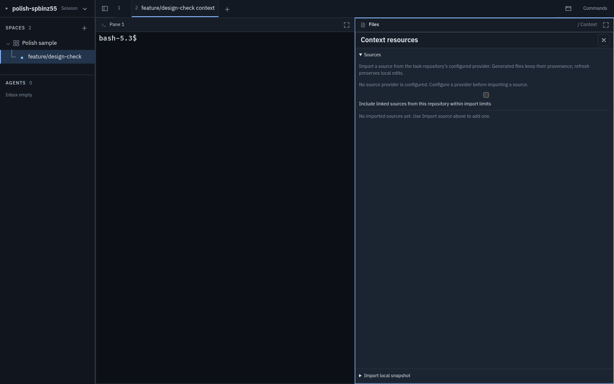
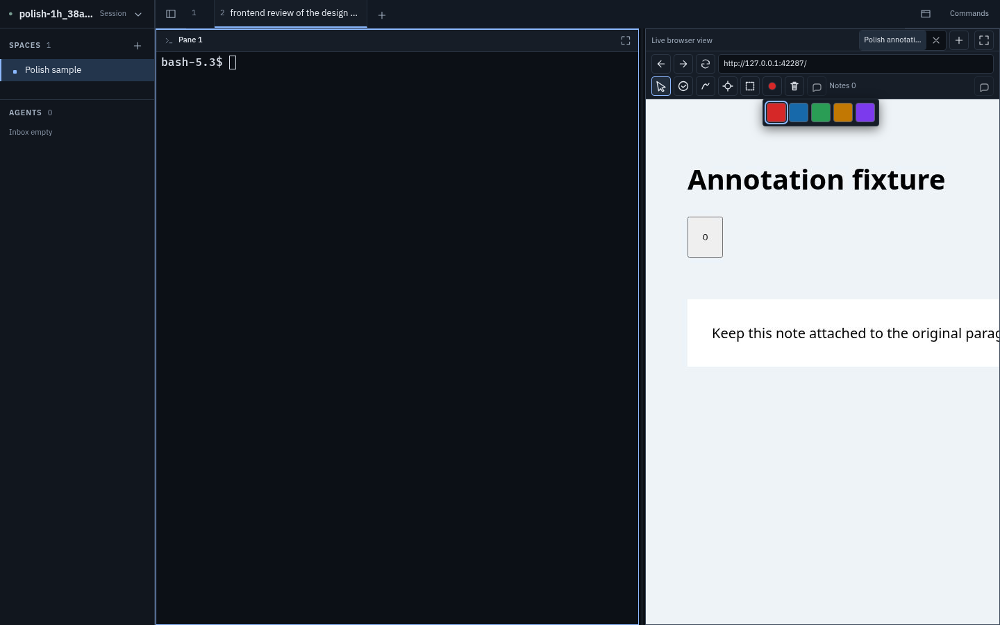
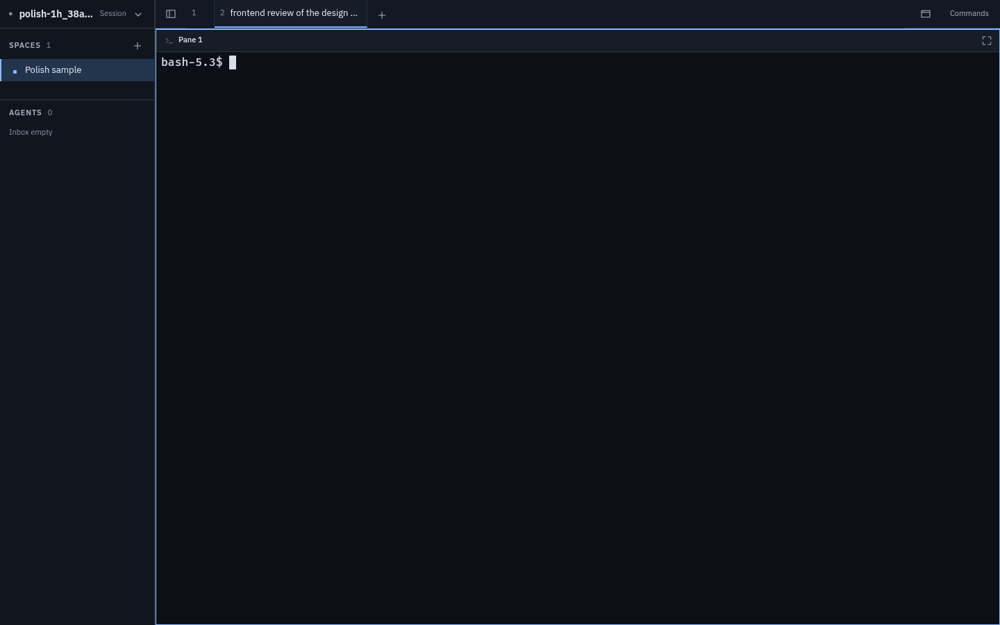
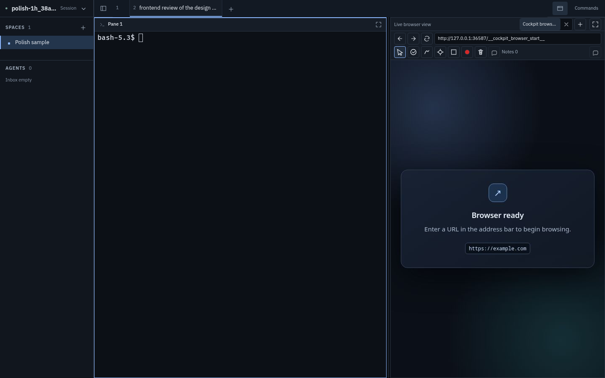
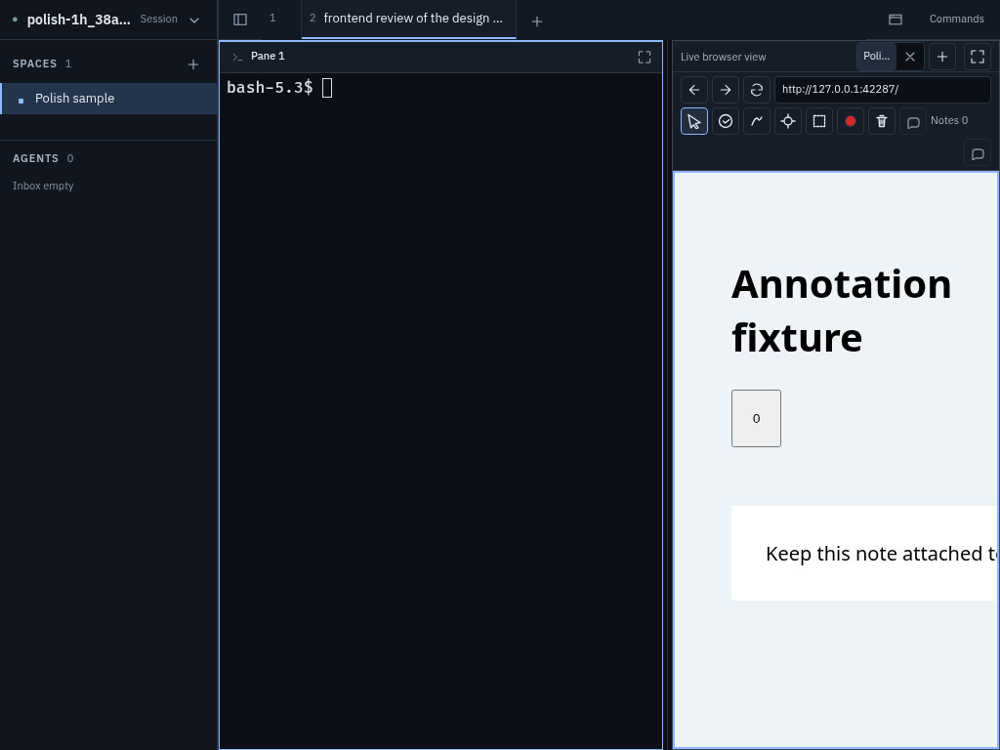
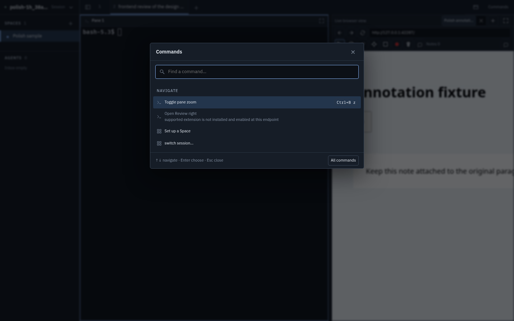
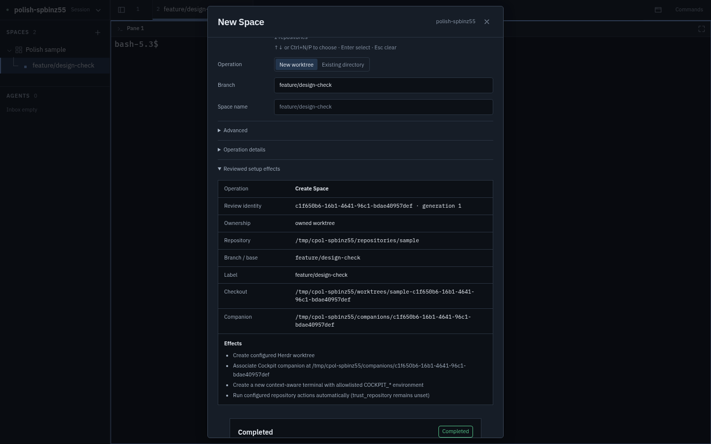
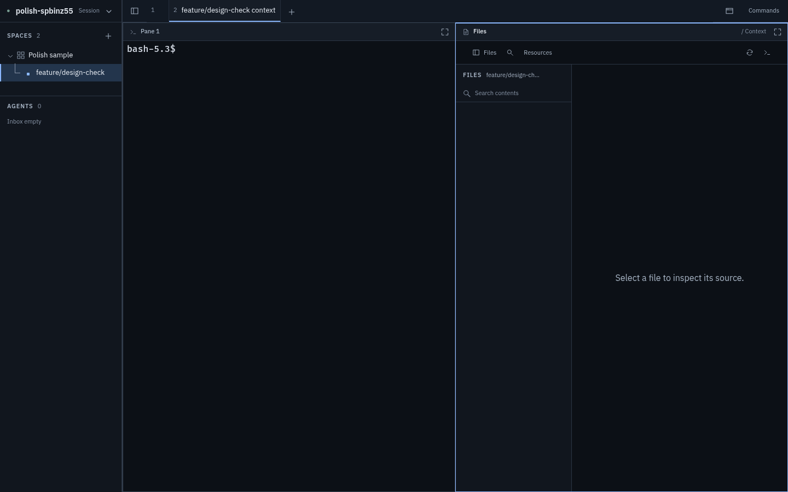
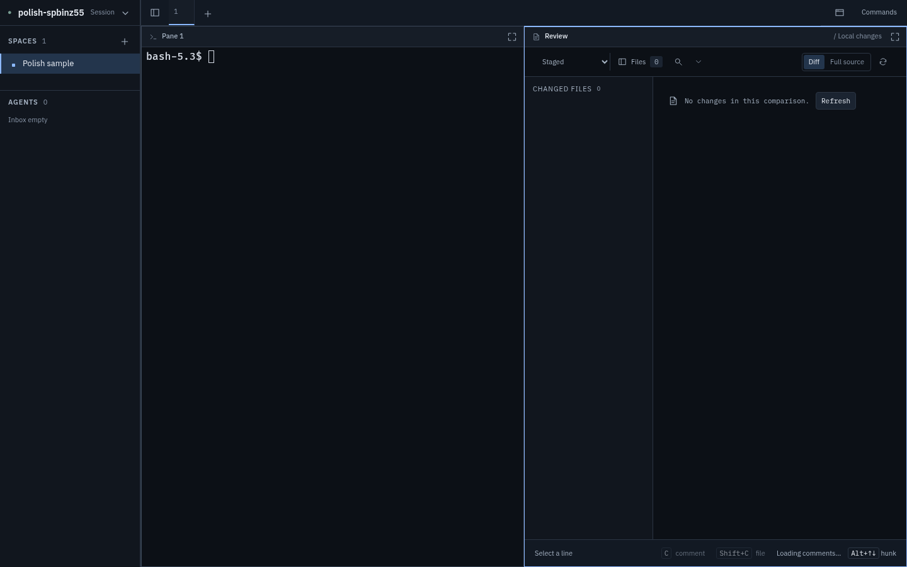
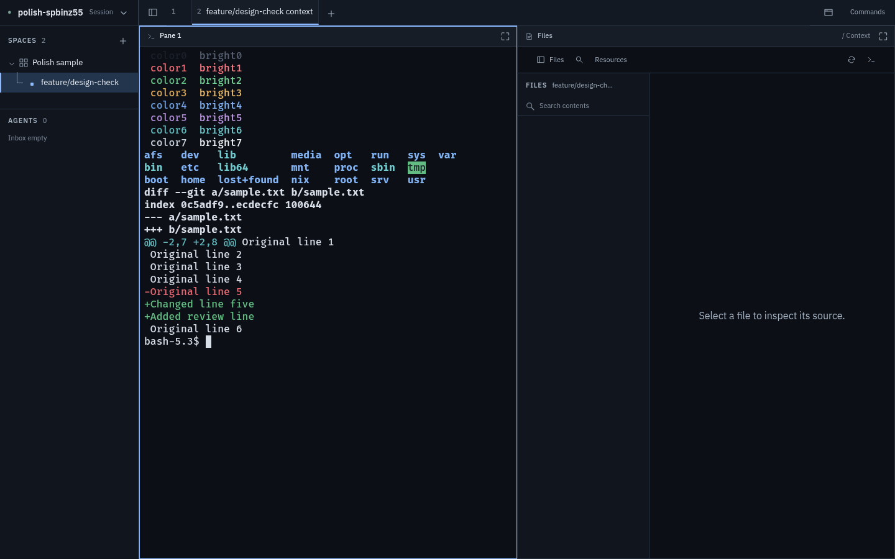

Frontend polish pass: check
This page reviews commit fcc2229 "Polish frontend chrome, resource scanning and theme tokens" against the design review. I ran Cockpit in the browser against an isolated Herdr fixture (scripts/verify/ui_polish_runtime.py, with the file-viewer and reviewr plugins added) and drove it with Playwright at 1440, 1024 and 760 px wide. I did not change any code. 2026-09-24.
Summary
- Done well: the type-scale cleanup (95 raw px font sizes down to 1), tokens (
--warning,--scrim,--font-*), the distinct--donecolour, and the terminal colours. Browser pane controls now have icons and aria-labels, and the colour swatches collapsed into one picker. The Context source list now has chips and a details section. The New Space dialog no longer scrolls at first open. Tabs size to their content. - Regressions introduced: 2. The Context-resources checkbox is now 588px wide, and the colour picker can't be closed with Esc or by clicking outside it.
- Not addressed at all: the Herdr-alignment items H1 (sidebar density), H2 (pane header row), H3 (status glyphs) and H5 (heading style).
App.tsxis untouched. - Code hygiene: about 100 CSS selector lines were given a stray leading space. One agent font fix has no effect because another rule overrides it. JSX indentation in
BrowserPane.tsxis broken. - Typecheck passes and all 231 unit tests pass.
Scorecard against the original findings
| # | Finding | Status | Notes |
|---|---|---|---|
| 1 | Font sizes skip the type scale | done | 95 raw px sizes down to 1 (comments.css:98 is still 16px). But everything from 9 to 12px became 11px (2xs): command rows and context-menu items got smaller (12 → 11), and the difference between headings and rows is gone. |
| 2 | Undefined tokens / drifted fallbacks | done | Tokens defined on :root; setup.css fallbacks removed. |
| 3 | Browser pane glyphs / 4 rows / swatches | partial | Icons and labels added; 4 rows became 3 (about 100px of controls at 1440px wide, 133px at 1024px). See Q3–Q6. |
| 4 | Context resources hard to scan | untested | The chips and details code looks right, but no provider was configured in the fixture, so I couldn't render a source entry. The empty state of the same panel has new problems (R1, Q9). |
| 5 | Blank empty states / Review toolbar wraps | partial | Review now says "No changes in this comparison" and its toolbar no longer wraps at 1440px wide. The Context file tree is still blank when empty (Q10). |
| 6 | New Space dialog is one long scroll | partial | The first view fits. After "Review setup" it becomes a long scroll again and the Start setup button is off-screen (Q8). |
| 7 | --done ≈ --accent | done | #ae9cdb. Since H3 wasn't done, blocked and done still use the same glyph. |
| 8 | Ad hoc radii / 15 z-index values | not done | New code adds z-index: 1 and 5, plus border-radius: 999px. |
| 9 | Tab width clamp / "Pane 1" header | partial | Tabs size to content (40–220px). The number is left-aligned inside a 40px box (Q1). "Pane 1" header unchanged. |
| 10 | BrowserPane.tsx size | not done | Grew to about 2,390 lines. |
| H1 | Sidebar density (branch/ahead on every space, 2-line agents) | not done | App.tsx:420 still shows the branch only for the selected space. |
| H2 | Chrome budget (tab strip + pane header) | not done | Still 41px + 33px above every terminal. |
| H3 | Status glyphs match Herdr | not done | stateGlyph (App.tsx:62) unchanged: blocked and done both ●. |
| H4 | xterm ANSI theme | done | 16 colours, cursor and selection set; verified visually (Q12). |
| H5 | Heading style / action placement / active tab | not done | Only the size token changed; headings are still uppercase with letter spacing, and the active tab is still an underline. |
Regressions
Context resources checkbox stretches to full width
The commit deleted .context-sources input[type="checkbox"] { width: auto; }. The "Include linked sources" checkbox is now 588px wide: the box is centred on its own line and the label wraps below it.
Colour picker can't be dismissed
The picker is now a <details> popover. Esc and clicking the page leave it open; it closes only when you pick a colour or click the swatch again. Clicking outside it also passes the click through to the live page.


Quirks found while testing
Tabs
A numbered tab is 40px wide with padding: 0 8px and content aligned to the start, so the "1" sits at x+8 with about 26px of empty space to its right. Centre it when there's no label, or drop the minimum width to about 28px. The number is 11px next to the 19px "+" button, so it also looks higher than the "+".

Browser pane
The status text "Live browser view" now takes the left of the first row, and the browser tabs are pushed right with max-width: 32%. At 1024px wide the tab label becomes "Poli…", which shows too little to read. The status text should be a small dot or go last, and the tabs should get the space.
At a 334px pane width the annotation toolbar wraps and the Send annotations button ends up alone on a fourth row. The controls take 133px of height before the page starts.
The "Edit note" button (next to "Notes 0") and the "Send annotations" button (far right) use the same speech-bubble icon. Also, Remove is enabled when a draft exists but nothing is selected.
The start page shows the internal URL http://127.0.0.1:NNNN/__cockpit_browser_start__ in the address bar. An empty field with its placeholder would look cleaner.


Commands palette
Rows dropped from 12px to 11px, so they're now smaller than the 13px search field. "switch session..." is lowercase and uses three dots where every other row uses sentence case and "…". After clicking All commands, the highlight jumps to the 6th row ("Focus pane above") instead of the first. Disabled rows show a long technical reason ("pane is not a supported extension; Open Context requires a source pane at a reviewed companion checkout") at the same weight as the command itself.

New Space dialog
After Review setup, the "Reviewed setup effects" table (UUIDs and full paths) expands inline. The dialog becomes a long scroll again and Start setup sits below the fold (y = 952 in a 900px viewport). After starting, the "Completed" status appears at the bottom, off-screen, and the dialog stays open with every field disabled. The footer should stay visible (make it sticky), and on success the dialog should close or scroll to the result. Smaller issues: "1 repositories"; the Cancel button turns into "Close"; initial focus goes to the × button, not the first field.

Context
With no provider configured, the Resources panel says "No imported sources yet. Use Import source above to add one." There is no Import source control. The linked-sources checkbox is still enabled, and "Import local snapshot" is pinned to the bottom with about 580px of empty space above it.
An empty companion shows a blank file tree and "Select a file to inspect its source." There's no file to select, so it should say the directory is empty and point to Resources.

Review
After switching the comparison to Staged (empty), the status bar shows "Loading comments…" and never changes; it still did after 5 seconds. With "All local changes" it said "0 comments". The new empty message renders in mono while its Refresh button is sans. It sits next to a second Refresh button in the toolbar, and the file column stays empty under "CHANGED FILES 0". The agent's hunk-header font change (review.css:85, mono) has no effect because viewer.css:262 overrides it: the hunk header still renders in Plex Sans.

Terminal and general
The ANSI colours render as specified, and ls and git diff look right. Colour 0 (#1a1f29) is almost invisible on the terminal background, which is common, but a slightly lighter black would help prompts that use it.

The pane header breadcrumb splits in two: "Review" at the left and "/ Local changes" pushed to the far right, and the same for "Files … / Context". Tabs have no close button on hover, though ui-design-direction.md specifies one. The "Open browser" toolbar button shows only an icon, while "Commands" next to it shows only text.
- About 100 selector lines got a stray leading space (
" .connection-mark"and others): 14 instyles.css, 51 insetup.css, 31 inviewer.cssand 4 incontext.css. This looks like leftover output from a find-and-replace script. It's harmless, but it clutters diffs. BrowserPane.tsxaround line 2372:</div>, a blank line, then another</div>with inconsistent indentation. The recovery and pending items inside the annotation toolbar weren't re-indented.- Duplicate rules for
.tab-itemand.tab-button(styles.css~736, ~1187, ~1706) were each edited instead of merged into one. - The browser server returns 404 for
/favicon.ico.
Suggested follow-up instructions
- Fix the regressions: restore
width:autoon the checkbox (R1). Close the colour picker on Esc and on outside clicks, without passing the click to the page (R2). - Fix the Review bug Q11: "Loading comments…" never clears after switching comparison. Also remove the dead hunk-header rule, or make it win over the
viewer.cssrule. - New Space flow Q8: keep the footer visible (sticky), collapse the effects table by default, and close the dialog or focus the result on success.
- Browser toolbar Q3–Q5: tabs first, status as a dot, keep Send on the first row, use a distinct send icon.
- Do the Herdr alignment work that was skipped (H1, H2, H3, H5): it has the most visible impact and none of it was attempted.
- Type scale: map the old 12px text to
xsrather than2xsso primary rows don't shrink. - Hygiene Q14: remove the leading spaces and merge the duplicate tab rules.